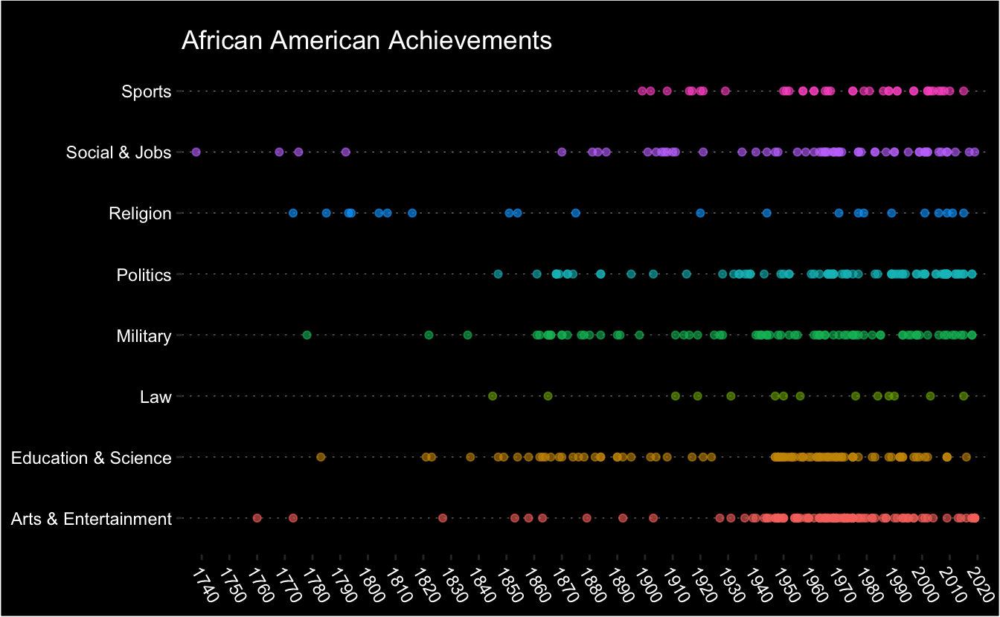

I have been writing a few posts about R on my blog and are getting annoyed with the workflow back and forth between RStudio and WordPress. Overall, the previous workflow has two main pitfalls making me frustrated:
Coping R code from RStudio and pasting it to WordPress can take me much time. Code highlight is also challenging, although eventually I figured out that the plugin of SyntaxHighlighter Evolved did a great job.
Often I need to export R outputs (e.g., ggplot2 plots) and upload them to WordPress, sometimes formatting them a bit.
These frustrations makes me seriously thinking about migrating my blog to blogdown so that I could write blogs in R Markdown. However, for some reason, I kind of want to stick with WordPress and don’t want a major change. For example, I really like this Twenty Twelve theme…
Finally, I came across goodpress package from Maëlle Salmon, which allows me to post from R Markdown to WordPress and keep the WordPress theme as is. So here comes my first experience with goodpress, which is really fun and thanks to Maëlle’s help I finally work through the whole workflow.
As mentioned above, the most important feature I need is if goodpress could post R code and outputs to WordPress and render them as I expect, so I first checked with my previous Tidytuesday case.
library(tidyverse)
firsts <- read_csv('https://raw.githubusercontent.com/rfordatascience/tidytuesday/master/data/2020/2020-06-09/firsts.csv')firsts
#> # A tibble: 479 x 5
#> year accomplishment person gender category
#> <dbl> <chr> <chr> <chr> <chr>
#> 1 1738 First free African-America… Gracia Real de Santa… African-A… Social & …
#> 2 1760 First known African-Americ… Jupiter Hammon (poem… Female Af… Arts & En…
#> 3 1768 First known African-Americ… Wentworth Cheswell, … African-A… Social & …
#> 4 1773 First known African-Americ… Phillis Wheatley (Po… Female Af… Arts & En…
#> 5 1773 First separate African-Ame… Silver Bluff Baptist… African-A… Religion
#> 6 1775 First African-American to … Prince Hall African-A… Social & …
#> 7 1778 First African-American U.S… the 1st Rhode Island… African-A… Military
#> 8 1783 First African-American to … James Derham, who di… African-A… Education…
#> 9 1785 First African-American ord… Rev. Lemuel Haynes. … African-A… Religion
#> 10 1792 First major African-Americ… 3,000 Black Loyalist… African-A… Social & …
#> # … with 469 more rowsggplot(firsts, aes(year, category, color = category)) +
geom_point(alpha = 0.6) +
scale_x_continuous(breaks = seq(1730, 2020, 10),
expand = c(0.015, 0.975)) +
labs(x = NULL,
y = NULL,
title = "African American Achievements") +
theme(legend.position = "none",
plot.background = element_rect(fill = "black"),
plot.title = element_text(color = "white",
margin = margin(t = 10)),
panel.background = element_rect(fill = "black"),
panel.grid.major.x = element_blank(),
panel.grid.major.y = element_line(color = "white", size = 0.1, linetype = "dotted"),
panel.grid.minor = element_blank(),
axis.text = element_text(color = "white"),
axis.text.x = element_text(angle = -60, vjust = 1, hjust = 0),
axis.title = element_text(color = "white"))

It looks everything is perfect! For more inspirations, check goodpress demo site: https://rmd-wordpress.eu/.
The goodpress instructions are quite straightforward and you can follow the documentation step by step, but when I first tried goodpress I did have some issues that I want to point out so that you don’t make the same mistakes I made.
Following the steps in Authentication, the first mistake I made is that I should not use the WordPress user and password for WP_USER and WP_PWD. Instead, I should use the information of Application Passwords in WordPress, as shown below.
So far, goodpress seems very strict with the YAML metadata format. For example, for the Author you can either eliminate it or use one of the existing usernames of your WordPress. I suggest to copy the YAML header from the documentation: https://maelle.github.io/goodpress/index.html.
goodpress is still a WIP package and only has one function of wp_post. While it solves my problem, I do look forward to more features to improve the whole experience. For example, I cannot remember all the category and tag names and I have to go back to check them on WordPress dashboard. Probably it can be done with another function so that I can forget WordPress dashboard?
As shown above, goodpress is what I want and the workflow from R Markdown to WordPress is way better than before. I highly recommend it to WordPress users who often write blogs about R.
This post is written in R Markdown and posted to WordPress via goodpress(version: 0.0.0.9000).